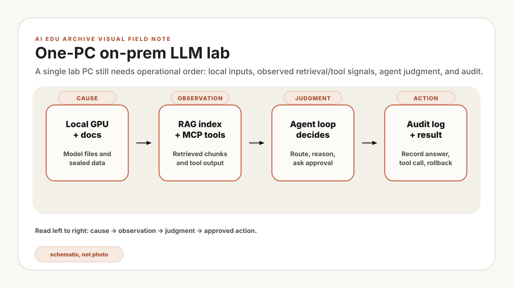

A failed 7B-model start looks like a sizing problem at first. Then the lab notebook supplies the more useful clue: the runtime cannot see CUDA at all. Stop changing quantization settings. Confirm the driver, runtime build, and device visibility first; model sizing is still unproven. This is a constructed troubleshooting example, not a reported incident or benchmark.
Passing this lab demonstrates only local functionality in the tested workspace. It does not establish production security, air-gap integrity, access control, sandboxing, or suitability for plant data and systems.
Open a lab notebook before opening a model catalog. A consumer PC is enough to learn local inference, tool discovery, and a constrained agent loop. It is also easy to confuse “the prompt returned text” with “the stack is ready.” Record the GPU, driver, OS, package lock, model artifact, command, timestamp, peak VRAM, and pass/stop result at each checkpoint. The outputs below are illustrative because this article does not include matching run evidence.
Disclosure. Future versions of this series may include affiliate links to books or hardware. The rule is simple: recommendations must be technically relevant, and every article must remain useful without buying anything.
The promise: one normal PC
The lab contains a local model server, Python client, document index, MCP tool server, and constrained agent loop. Similar component names may appear in production architectures, but this lab does not reproduce production identity, network, audit, availability, or change-control requirements.
Each step has a command, an acceptance check, and a troubleshooting boundary. Treat every displayed output block as an example of shape, not proof. A checkpoint passes only when the same command on the recorded machine produces retained evidence; stop when the prerequisite checkpoint fails.
The practical stack:
- Ollama for the easiest local model server and OpenAI-compatible API.
- Hugging Face Transformers for direct model loading and 4-bit experiments.
- bitsandbytes for 4-bit / 8-bit quantized inference when your GPU is tight.
- MCP for exposing local tools, files, and workflows to agents in a standard way.
- Goose for the Claude Code / Codex-like layer: terminal agent, extensions, file work, and local automation.
- Python for the glue: retrieval, tools, logging, and safety checks.
Hardware tiers
Use the following model-size and VRAM combinations as illustrative starting values, not tested capacity claims or purchasing advice. Measure peak allocation and out-of-memory behavior on the target runtime.
- CPU-only, 32 GB RAM: slow with small 1B-3B models, but useful for learning APIs and prompts.
- 8 GB VRAM: 3B-7B quantized models, short context, one user at a time.
- 12 GB VRAM: comfortable quantized 7B-8B models; small RAG demos start to feel real.
- 16 GB VRAM: 8B-14B quantized models, longer context, better agent experiments.
- 24 GB VRAM: 14B-class quantized models and smoother multi-tool workflows.
For a purchase decision, compare usable VRAM, supported runtime, power and cooling limits, and the measured workload. Peak compute alone does not tell you whether the model and its KV cache will fit.
The series roadmap
Write four rows before continuing: device visible, model loads, local API answers, and tool call matches expected output. For each row, record command, expected evidence, actual evidence, and one rollback action. Pass a row only when its evidence is retained. Stop at the first failure; do not compensate by changing several packages, models, and context settings together. Limit: this exercise checks a disposable single-user lab, not isolation, multi-user authorization, or production capacity.
- Local LLM server. Install Ollama, pull a small instruct model, and call it from Python.
- Hugging Face direct path. Load a model with Transformers, apply a chat template, and try 4-bit quantization.
- Local RAG. Index a small folder of PDFs or Markdown files and answer with citations.
- First MCP server. Expose a constrained local tool such as a calculator or fixed lab note.
- Goose coding agent. Connect a local model provider and let the agent inspect, edit, and test a tiny repo.
- Agent loop. Let the model choose tools, but require structured output and approval gates.
- Operations. Logs, evaluation questions, GPU monitoring, backups, and “do not run this command” rules.
Part 1: local server with Ollama
Begin with one local serving path to limit setup variables. Install Ollama, pull a small model, and call the local OpenAI-compatible endpoint. The common default is http://localhost:11434; verify the actual bind address and port.
Step 1. Pull a small instruct model
Pick a 3B-7B model first. Larger models can wait. The first win is proving that your PC can download, load, and answer locally.
# Pick a small instruct model first. Replace the model name as needed.
ollama pull qwen2.5:7b-instruct
# Quick smoke test
ollama run qwen2.5:7b-instruct "Explain RAG in three concise sentences."Illustrative terminal output, not captured test evidence. Acceptance requires a successful artifact pull and a non-empty response from the exact model recorded in the lab log.
pulling manifest
pulling 8c3f... 100% ▕████████████████████████████████▏
verifying sha256 digest
writing manifest
success
RAG grounds an LLM's answer in documents retrieved for the question.
Instead of memorizing every fact, the model first reads the most relevant material.
That makes it useful for internal or technical documents where freshness and sources matter.Checkpoint: record pass only when the local endpoint returns a response and the process owning the endpoint is identified. This does not verify latency, response quality, or network isolation.
Step 2. Call the same model from Python
Now call the local endpoint from Python. This matters because RAG libraries, agent frameworks, and Goose-style tools often integrate through this API shape.
Create one lab environment with Python 3.10 or later and install the OpenAI-compatible client before running the script. The current MCP Python SDK used in Step 5 requires Python 3.10 or later, so the version assertion deliberately stops the lab early on an older interpreter. The later Python steps reuse this environment.
python --version
python -c "import sys; assert sys.version_info >= (3, 10), 'Python 3.10 or later is required'"
python -m venv .venv
& .\.venv\Scripts\python.exe -m pip install --upgrade pip
& .\.venv\Scripts\python.exe -m pip install openai
& .\.venv\Scripts\python.exe -c "import openai; print(openai.__version__)"from openai import OpenAI
client = OpenAI(
base_url="http://localhost:11434/v1",
api_key="ollama", # local placeholder
)
response = client.chat.completions.create(
model="qwen2.5:7b-instruct",
messages=[
{"role": "system", "content": "You are a concise AI tutor."},
{"role": "user", "content": "Explain an on-prem LLM in one paragraph."},
],
)
print(response.choices[0].message.content)Illustrative terminal output, not captured test evidence. Run & .\.venv\Scripts\python.exe local_chat.py; accept when the Python client receives a non-empty response from the configured local endpoint.
An on-prem LLM runs on a server or PC managed by an organization or individual
rather than through an external model API. Local placement alone does not prove
security or network isolation; those require separate controls and evidence.If it fails. If you see a connection error, confirm Ollama is running. If you see “model not found,” make sure the Python model value exactly matches the model name you pulled.
After the endpoint checkpoint passes, retain its configuration and result as the baseline. Add RAG, MCP, or agent components one at a time so failures can be attributed to a specific change.
Part 2: Hugging Face 4-bit inference
The Hugging Face path gives you more control. It also gives you more ways to misconfigure the machine, so keep the first script small. The important details are: use the tokenizer’s chat template, use device_map="auto", and try 4-bit only after you understand normal loading.
Step 3. Add the Hugging Face dependencies
Keep using the lab environment created in Step 2. Local LLM work is dependency-sensitive, so install through that environment's interpreter and record the resolved versions before running the model.
& .\.venv\Scripts\python.exe -m pip install torch transformers accelerate bitsandbytes
& .\.venv\Scripts\python.exe -c "import torch, transformers, accelerate, bitsandbytes; print(torch.__version__, transformers.__version__)"
& .\.venv\Scripts\python.exe -m pip freezeIllustrative terminal output, not captured test evidence. Acceptance requires a zero exit code, a retained dependency lock, and successful imports in the activated environment.
Successfully installed accelerate-... bitsandbytes-... torch-... transformers-...
(.venv) PS C:\coding\home-llm-lab>Step 4. Run a 4-bit Hugging Face chat script
import torch
from transformers import AutoModelForCausalLM, AutoTokenizer, BitsAndBytesConfig
model_id = "Qwen/Qwen2.5-3B-Instruct"
bnb_config = BitsAndBytesConfig(
load_in_4bit=True,
bnb_4bit_quant_type="nf4",
bnb_4bit_compute_dtype=torch.float16,
)
tokenizer = AutoTokenizer.from_pretrained(model_id)
model = AutoModelForCausalLM.from_pretrained(
model_id,
quantization_config=bnb_config,
device_map="auto",
)
messages = [
{"role": "system", "content": "You explain local LLM engineering clearly."},
{"role": "user", "content": "What is the first thing to test on a gaming GPU LLM setup?"},
]
prompt = tokenizer.apply_chat_template(
messages,
tokenize=False,
add_generation_prompt=True,
)
inputs = tokenizer(prompt, return_tensors="pt").to(model.device)
with torch.no_grad():
out = model.generate(**inputs, max_new_tokens=160, temperature=0.2)
print(tokenizer.decode(out[0][inputs.input_ids.shape[-1]:], skip_special_tokens=True))Illustrative terminal output, not captured test evidence. Acceptance requires successful model load and non-empty generation; record peak VRAM and elapsed load and generation time.
Loading checkpoint shards: 100%|████████████████| 2/2 [00:08<00:00, 4.11s/it]
The first thing to test is a tiny end-to-end prompt. Confirm that the model loads,
accepts a chat-formatted prompt, generates text, and does not run out of VRAM.If it fails, classify the clue before changing anything: device-visibility error, allocation error, tokenizer or chat-template error, or generation error. Change one variable, repeat the same prompt, and write down the result. A smaller model is useful only after the runtime can see the intended device.
Part 3: first MCP tool
After local inference works, add tools. Begin with a non-state-changing function whose inputs and outputs can be asserted. MCP gives that function a discoverable tool contract.
Step 5. Run a constrained MCP server
The shown functions do not contain file, shell, or network calls. That narrow code surface does not prove process isolation or server security; inspect dependencies and run the server in the disposable lab workspace.
Install the MCP SDK in the same lab environment. Save the server as lab_tools_server.py, then save the fixed-input stdio client below as lab_tools_check.py. The client launches the server itself, so this checkpoint does not require Node.js, uv, or a separate Inspector process.
& .\.venv\Scripts\python.exe -m pip install mcp# A constrained lab MCP server: calculation + fixed policy text.
from mcp.server.fastmcp import FastMCP
mcp = FastMCP("home-llm-lab")
@mcp.tool()
def vram_rule_of_thumb(model_size_b: float, bits: int = 4) -> str:
"""Estimate raw model weight memory for a quantized LLM."""
gb = model_size_b * bits / 8
return f"Raw weights need about {gb:.1f} GB before KV cache and overhead."
@mcp.tool()
def lab_policy() -> str:
"""Return the safety policy for the home LLM lab."""
return (
"Read-only by default. No shell execution, no file deletion, "
"no network calls, and no tool action without logging."
)
if __name__ == "__main__":
mcp.run()import asyncio
import sys
from mcp import ClientSession, StdioServerParameters
from mcp.client.stdio import stdio_client
async def check():
params = StdioServerParameters(
command=sys.executable,
args=["lab_tools_server.py"],
)
async with stdio_client(params) as (read, write):
async with ClientSession(read, write) as session:
await session.initialize()
listed = await session.list_tools()
names = {tool.name for tool in listed.tools}
assert names == {"vram_rule_of_thumb", "lab_policy"}
vram = await session.call_tool(
"vram_rule_of_thumb",
arguments={"model_size_b": 7, "bits": 4},
)
policy = await session.call_tool("lab_policy", arguments={})
assert not vram.isError and not policy.isError
assert "3.5 GB" in vram.content[0].text
assert "Read-only by default" in policy.content[0].text
print("Available tools:", ", ".join(sorted(names)))
print(vram.content[0].text)
print(policy.content[0].text)
asyncio.run(check())Run & .\.venv\Scripts\python.exe .\lab_tools_check.py. Illustrative terminal output, not captured test evidence:
Available tools: lab_policy, vram_rule_of_thumb
Raw weights need about 3.5 GB before KV cache and overhead.
Read-only by default. No shell execution, no file deletion, no network calls,
and no tool action without logging.Checkpoint: both expected tool names are discoverable and fixed-input calls match expected results. This verifies the test cases only; it does not authorize broader tools.
Keep the tool surface narrow and add negative tests for unknown tools and invalid argument types before extending the lab.
Part 4: Goose as a local coding agent
After local inference and MCP tool tests pass, this lab uses Goose as a local coding-agent client. In the disposable repository, it can be evaluated for code inspection, proposed edits, test execution, and MCP calls.
The first Goose milestone is intentionally small.
- Use Ollama or another local provider as the model.
- Open a toy Python repo, not your main work folder.
- Ask Goose to explain the code before it edits anything.
- Allow file edits only after reviewing the diff.
- Allow only a small command allowlist such as test, lint, and format.
# Windows PowerShell. Install Goose using its current official instructions.
# Then configure a local provider such as Ollama in Goose's provider settings.
New-Item -ItemType Directory -Path .\home-agent-lab | Out-Null
Set-Location .\home-agent-lab
python -m venv .venv
# Tiny repo for the first agent task
New-Item -ItemType Directory -Path .\src, .\tests | Out-Null
'def add(a, b): return a + b' |
Set-Content -LiteralPath .\src\calculator.py -Encoding utf8
@'
from src.calculator import add
def test_add():
assert add(2, 3) == 5
'@ | Set-Content -LiteralPath .\tests\test_calculator.py -Encoding utf8
& .\.venv\Scripts\python.exe -m pip install pytest
& .\.venv\Scripts\python.exe -m pytest
# First Goose prompt idea:
# \"Read this repo. Explain its structure. Do not edit files yet.\"Illustrative terminal output, not captured test evidence. The baseline test must pass before the agent starts; otherwise stop and correct the fixture.
============================= test session starts =============================
collected 1 item
tests/test_calculator.py . [100%]
============================== 1 passed in 0.03s ==============================Now ask Goose to inspect the project without editing it. A good first response should mention the source file, the test file, and the fact that the project exposes one simple add function.
I found a small Python project:
- src/calculator.py defines add(a, b)
- tests/test_calculator.py imports add and checks add(2, 3) == 5
- The pytest baseline passes
I have not edited any files.Checkpoint: compare a before/after file hash or clean version-control diff, confirm that no file changed, and verify that the response names the source and test files. The displayed response is illustrative until those artifacts are retained.
The next lab step can connect the coding agent to this MCP server. Keep it inside the disposable repository, deny secrets and unrelated paths, and review every diff and command. These restrictions reduce lab exposure but are not a production sandbox claim.
Do not start by giving a local agent your whole computer. Use a disposable repo. Keep secrets outside the folder. The point is to learn the agent loop before trusting it with anything valuable.
What comes next
The next article turns the passing local endpoint into local RAG: one document folder, local embeddings, a vector index, and cited answers. Carry the lab notebook forward. The endpoint record becomes the baseline, and any new failure should be attributable to ingestion, retrieval, prompting, or the agent layer rather than an unknown serving change.